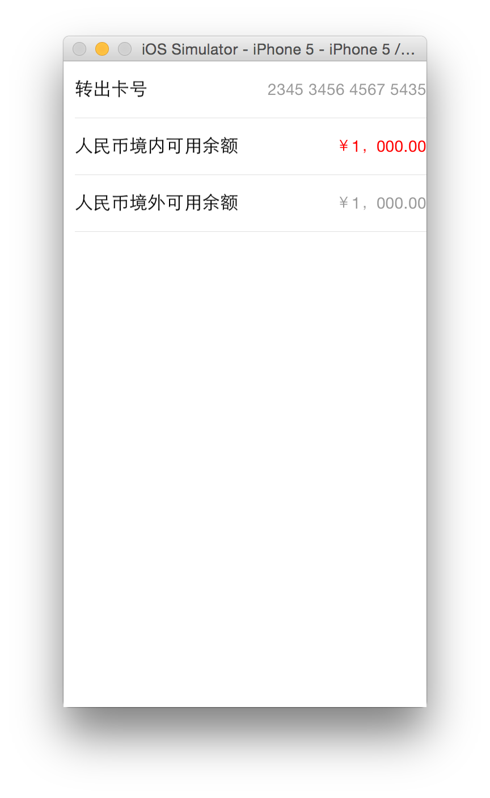

基础控件命名规范
1 样式命名规范
基础控件是所有项目都能使用控件列表，使用关键字触发。
我们规定基础控件样式命名前缀为ert_,整体样式以样式属性命名。
比如{font-size:14px;color:#FF0000;}则将此样式命名为ert_f14r.
在这里我们规定一些常见的简写：
字体样式简写
- f16w:表示字体为16px，颜色为白色。
- f16b:表示字体为16px，颜色为黑色.
宽度样式简写：
- w40:表示width40px;
高度样式简写：
- h40:表示height40px;
right简写
- r20:表示right20px;
left简写：
- l20:表示left20px;
top简写：
- t20:表示top20px;
bottom简写：
- b20:表示bottom20px;
background-color:
- bg_red：能用英文尽量用英文首字母。
- bg_789：不能则用颜色值简写，比如用
789表示#778899。
2 代码片段编写规范
2.1 tr包含一个td
对于tr类型的基础控件，如果能用一个td实现时，尽量使用一个td实现，这样避免多个tr组成一个table时 出现td个数不一样的问题。
例如：
对于上图中由两个label组成的tr，在以前的写法中习惯写为两个td，
左面td的align属性设置为left，右面td的align属性设置为right。
这样写没有任何错误也能实现图中效果，如果父控件table中还有其他tr，其他tr中只有一个td，则会导致解析布局错误。
对于上图中效果我们可以利用两个label来组成一个td。
<tr class="ert_h50">
<td >
<label class="ert_f16b_left">转出卡号</label>
<label class="ert_f14r_right">2345 3456 4567 5435</label>
</td>
</tr>
其中样式为：
.ert_f16b_left{color:#000000;font-size:16px;text-align: left;}
.ert_f14r_right{color:#FF0000;font-size: 14px;text-align: right;}
用此tr来组成一个table，代码为：
<table class="ert_w310_l10_w" border="0" separator="#E0E0E0">
<tr class="ert_h50">
<td >
<label class="ert_f16b_left">转出卡号</label>
<label class="ert_f14g_right">2345 3456 4567 5435</label>
</td>
</tr>
<tr class="ert_h50" >
<td >
<label class="ert_f16b_left">人民币境内可用余额</label>
<label class="ert_f14r_right">￥1，000.00</label>
</td>
</tr>
<tr class="ert_h50" >
<td>
<label class="ert_f16b_left">人民币境外可用余额</label>
<label class="ert_f14g_right">￥1，000.00</label>
</td>
</tr>
</table>
运行效果为：

从运行效果中看到右面label过于靠右，实际效果上是需要有一定间隔，对于这种情况，有两种解决方案：
- 修改label样式加一个right:10px;样式限制居右为10px；
- 将table宽度少写10px；这样居右就有间隔。
个人推荐使用第二种解决方案。
2.2 尽量少使用top，left，width等限制
对于一些界面效果，能使用 text-align 和 valign实现的话就尽量不要使用top值，left值，right值 等来限制控件位置。
比如上例中效果，没有使用label的left和right来布局，而是使用text-align来布局，最后利用table的布局来实现左右边距。
3 添加绑定规则
有些基础控件会有一些特定的点击效果，例如如下效果：

在切换此segment时需要变换字体颜色同时增加底部的线条。
对于这种带有公共性的点击效果可以为基础控件直接绑定此类方法，在界面上添加此控件后，此点击效果会自动绑定上。
规定写法为使用特殊的class名称获取对应控件，然后对控件使用setOnClickListener接口增加点击监听，此监听方法
会在控件本身的onclick事件执行之前调用。
此segment的HTML代码为：
<div class="ert_segment_bind,ert_seg_div_gw320" border="0" valign="middle">
<input type="button" class="ert_segment_bind,ert_btn_w80" name="segment5" value="明细" />
<input type="button" class="ert_segment_bind,ert_w80" name="segment5" value="对账单" />
<input type="button" class="ert_segment_bind,ert_w80" name="segment5" value="详情" />
<input type="button" class="ert_segment_bind,ert_w80" name="segment5" value="设置" />
<label class="ert_line_bind,ert_rline_w80_r" name="seg_short_line"></label>
</div>
从代码中可以看出每一个segment的class中有一个特定样式ert_segment_bind,父控件div的class中有一个特定样式ert_segment_bind,
底部线class有一个特定的样式ert_rline_bind。
根据这些样式获取控件同时为控件添加监听方法，具体实现代码为：
(function()
local segment = {};
local segment_class = "ert_segment_bind";
local segment_ctrls = document:getElementsByClassName(segment_class);
local line_class = "ert_line_bind";
local line_ctrl = document:getElementsByClassName(line_class);
local start_color = "#778899"; -- 未选中颜色
local select_color = "#FF6A6A"; -- 选中后颜色
-- 改变segment控件字体颜色并显影底部线条
local function set_bg(ctrl)
-- 获取div控件子控件列表
local child_ctrls = segment_ctrls[1]:getChildren();
local index;
for key,child_ctrl in pairs(child_ctrls) do
-- 选中segment控件
if child_ctrl == ctrl then
ctrl:setStyleByName("color",select_color);
index = key;
else
child_ctrl:setStyleByName("color",start_color);
end;
end;
local left = (index - 1)*80;
line_ctrl[1]:setStyleByName("left",left .. "px");
line_ctrl[1]:setStyleByName("color",select_color);
end;
function segment.binding_set()
for k,ctrl in pairs(segment_ctrls) do
ctrl:setOnClickListener(set_bg);
end
end;
segment.binding_set();
end)();
我们规定绑定方法使用匿名函数实现，使用这样的格式能确保所有此函数使用局部变量都在此函数中， 不会散落在整个lua文件中各个角落。
在此匿名方法中局部方法set_bg用来实现设置选中segment控件的字体颜色以及设置底部线条left值。
同时segment.binding_set方法调用setOnClickListener方法对可点击控件添加监听。